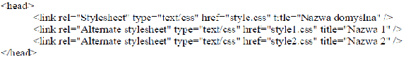

1) Zewnętrzny arkusz stylów |
2) Styl lokalny inaczej:(styl wpisany, liniowy, linijkowy, w linii) czyli dopisanie arkusza do wybranego bloku treści strony. |
3) Wewnętrzny arkusz stylów |
4) Alternatywny arkusz stylów |
5) Import arkusza stylów |